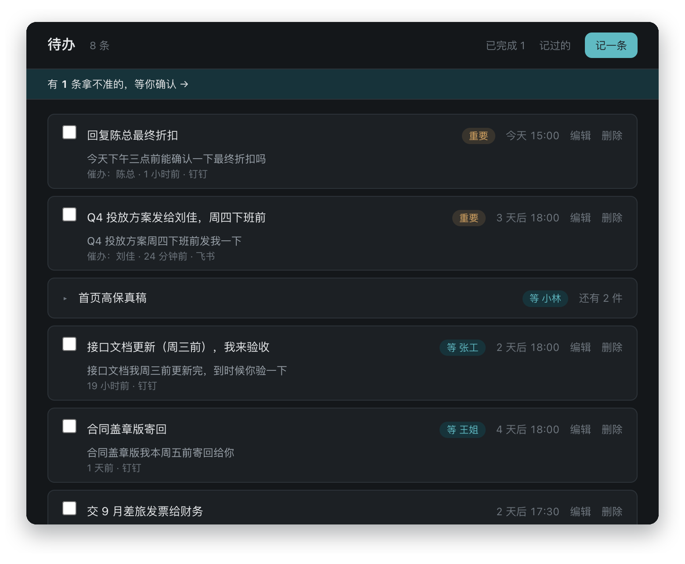
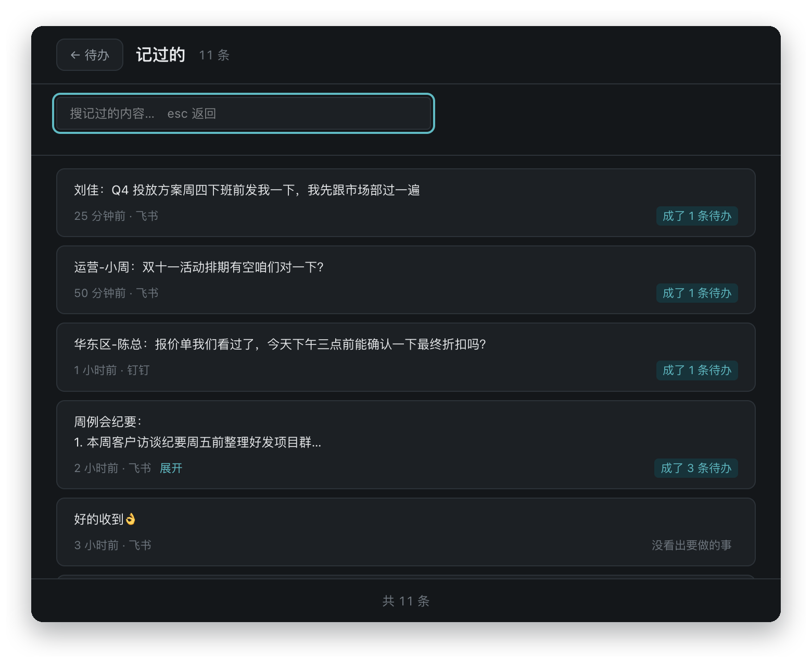
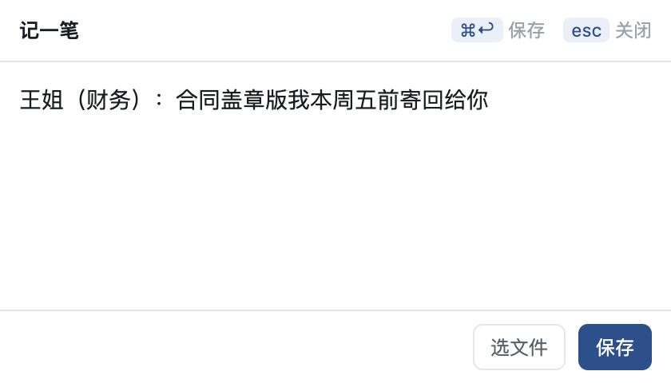
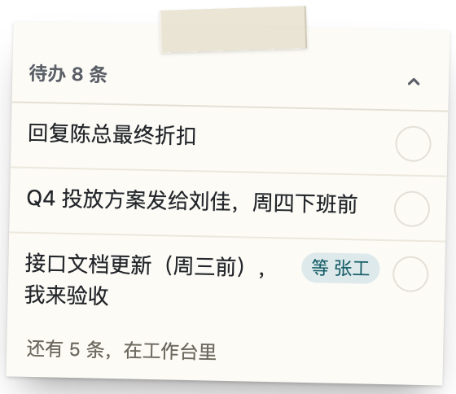
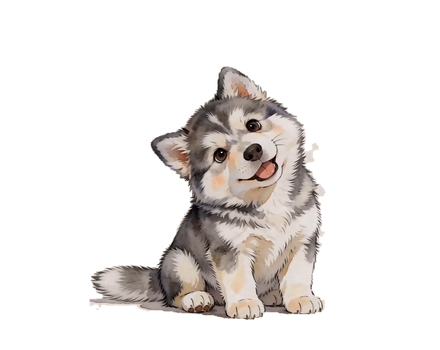
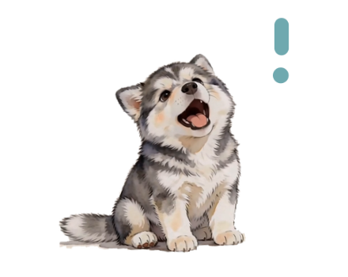
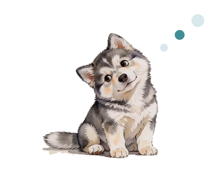
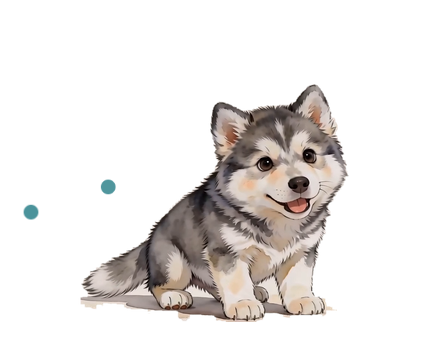
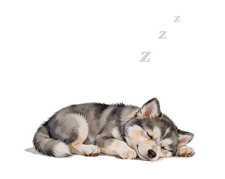

产品源于三类相互关联的工作痛点。它们共用同一份数据底座——捕获得越完整，后面的统计与检索才越有价值，所以按版本逐条推进，顺序不能颠倒。
交代的事散在各个聊天窗口、邮件和会议纪要里。V1 让「看到 → 记下」这一步足够轻，并把它变成有截止时间、会提醒的待办。
周报、述职、绩效考核时回忆不起来。V2 基于 V1 的记录做周 / 月 / 季 / 年统计，每一条都能回溯到原始出处。
面向问题直接给答案，而不是返回一堆文件；资料类型覆盖文档与音视频，每个答案都注明出自哪份资料。
好不好用，关键不在 AI 多聪明，而在记一件事要花几秒。所以记录这一步不打断你，读懂和整理都放在后台做。
在任何软件里选中一段文字，按 ⌘ ⌃ Y（Windows 为 Ctrl Alt Y）。也可以截图（macOS）、拖文件，或点「记一笔」手动输入。
AI 把一段话拆成一条或多条待办，识别截止时间、谁催的、谁来做。拿不准的不直接入列，先放进「待确认」等你点头。
快到期时小狗冒泡提醒，桌面便签常驻最要紧的几条。别人答应给你的东西，到点提醒你去催、去验收。
以下均为产品真实界面，数据为演示用示例。

每条待办下面带着原话和出处，改之前能对照原话确认。

记下的每一段原话都在这里，能搜索、能回溯。

没法选中文字的时候，粘贴或手打也行，⌘ ↩ 保存即走。

常驻屏幕一角，只放最要紧的三条，点圈即完成。
它在做什么，一眼就能看出来：空闲、有提醒、在理解、在记录、完成、休眠。闲置久了会自己躲到屏幕边上，不挡你干活。





每一条都来自真实的工作场景：先说你会遇到什么，再说阿拉怎么做，以及为什么这样设计。
选中那句话，按一下快捷键就记好了：不用切换窗口，不用填标题和日期，手上的活不会被打断。读懂内容、整理成待办这些事在后台慢慢做；截图也是先存下来，再在后台识别文字。
为什么：记一件事超过几秒，人就懒得记了。所以「记得快」排在「AI 聪明」前面，按键到记好控制在 1 秒以内。
在任何软件里选中文字都能记。阿拉不会读取你的聊天记录，只处理你主动交给它的那一段。
为什么：聊天记录是你的隐私，自动读取微信数据也有明确的法律风险。宁可多按一下键，也不越过这条线。
别人答应给你的东西，阿拉单独放在「我在等的」里，并标明在等谁。到了时间，它提醒你去催、去验收；你验收过了，这件事才算完成。
为什么：交代出去的那一刻，人心里就放下了。自己的活至少还有人催你，别人欠你的只能靠你自己记住。
整段交给阿拉，它会拆成一条条待办，分别写好截止时间、谁来做，并归在同一组里；原来的纪要也一直留着，随时能翻回去对照。
为什么：会议上交代的事最多、最容易漏，逐条手抄太麻烦，这一步就交给 AI。
比如「有空咱们对一下？」：到底是不是一件要办的事，阿拉拿不准时不会直接塞进列表，而是放进「待确认」，你点一下才算数。「好的收到」这类没什么要办的话，会被自动识别出来，不变成待办。
为什么：列表里混进一条不该有的，你就不敢相信整个列表了。宁可多问一句，也不替你做主。
AI 偶尔会出错，所以要用明确的规则和测试把它管住：先把规则定清楚，再写检验标准，最后才动手做。
动手之前，先写明什么算一件待办、原话和待办是什么关系、哪些东西绝对不能删。需求文档和程序都照这一份规则来，不会各说各话。
每个功能先写好「做到什么样才算完成」，再去实现。实现和标准对不上时以标准为准，不靠事后补救。
准备了两套真实风格的对话：一套用来调教 AI，另一套只用来考试、调教时从来不看。每一类常见错误（比如把自己问别人的话误记成待办）都有专门的测试，改好没有看数字，不凭感觉。
记下的内容都存在本机。只有需要 AI 读懂的那一段文字，会发给你自己配置的 DeepSeek；每一次发送都记在本地日志里，设置页里就能找到。
| 范围 | 内容 | 状态 |
|---|---|---|
| V1 | 桌面小狗、多种记录方式（快捷键 / 截图 / 拖文件 / 复制时提醒 / 手动输入）、AI 识别待办、待确认、到期提醒、我在等的、记过的、设置与首次引导 | 已完成 |
| 分发 | macOS（Intel / Apple 芯片）与 Windows 安装包 | 已完成 |
| 验证 | 真实用户连续使用 30 天（V1 唯一成功标准） | 进行中 |
| V2 | 成果看板：周 / 月 / 季 / 年统计与导出，邮件与日历接入 | 规划中 |
| V3 | 个人知识库与「问一问」多轮问答 | 规划中 |
约 3 分钟装好。安装包还没有购买平台签名证书，第一次打开会被系统拦一下，按下面的步骤放行即可，放行一次以后就不会再问。
AI 功能需要一个 DeepSeek 密钥。不填也能记录，但不会自动变成待办。在 platform.deepseek.com 注册、充值几元，创建一个 API Key，填进首次引导的第 3 屏即可。